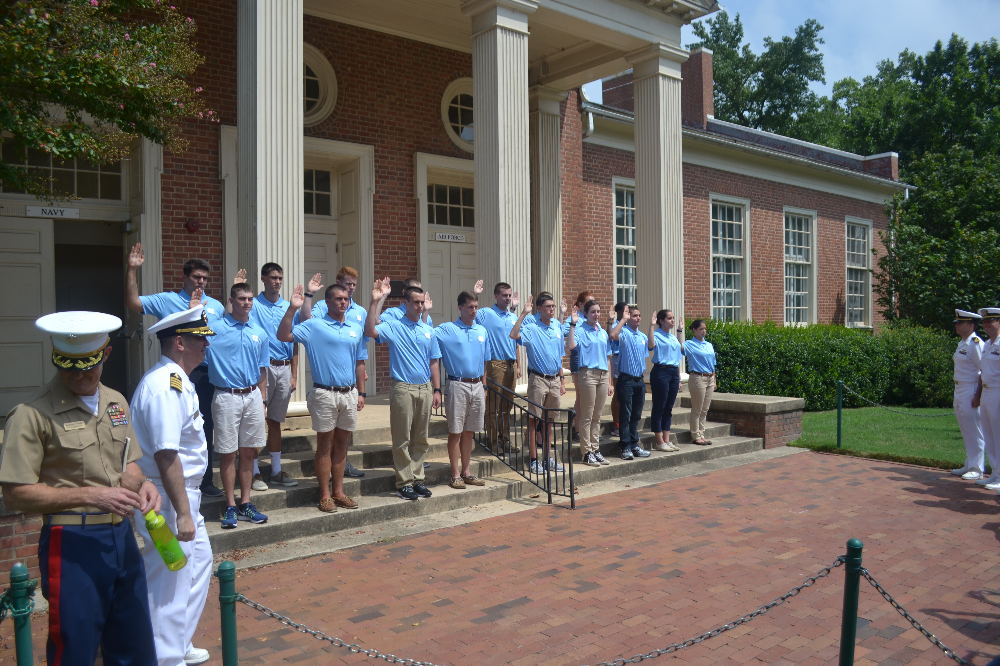

UNC NROTC
Our Roots
The Naval Reserve Officers Training Corps (NROTC) program was established in 1926 to offer the opportunity for young men to qualify for commissions in the United States Naval Reserve while attending college. Later the NROTC was revised to offer students the opportunity to graduate with a bachelor’s degree and a commission as either a Navy Ensign or a Marine Corps Second Lieutenant.
Active Duty Staff
The NROTC Unit is staffed by many active duty officers and enlisted personnel to improve the training for the midshipmen. The Commanding Officer is Captain Stern, who served as a submarine officer. The remaining chain of command consists of two Marine Corps Majors, one Navy Lieutenant Commander, and one Marine Corp Gunnery Sergeant. The active duty staff come from all warfare communitites and each bring a unique perspective to the Midshipman's training.
Our Location
All ROTC programs at UNC work in a shared building called the Armory. Located at 221 South Columbia Street, Chapel Hill, NC, the armory has served as the home to many generations of warriors. Access is restricted to ROTC staff and students, so no matter whats going on on campus, the midshipman will always have a home in the armory.
Why UNC ROTC?

Our ROTC program is dedicated to creating the finest Navy and Marine Corps officers. The students here recieve a top of the line education while also being a part of one of the fastest growing units in the nation. Our Naval officers recieve their top choice over 90% of the time, and our Marine Corps Officers have never failed Officer Candidate School. Last year, our school produce the #8 ranked Midshipman in the country, which is a true testament to the dedication and education our unit provides each and every midshipman willing to work hard.